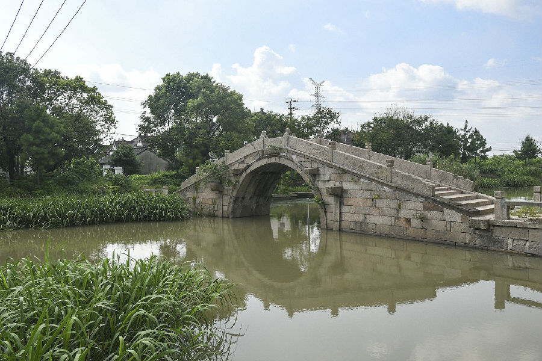

嘉兴市文物保护网 · 市级文物保护点 · 2022-05-16 · 原文

周公石桥位于秀洲区新塍镇洛东村村委会西南侧，东西横跨于四泾港，因为里人周某所建而得名。因后人在桥左建有周公亭，又名“北亭子桥”。始建年代不详，雍正二年（1724）重建，乾隆三十九年（1774）重修，民国三年（1914）重建。单孔有栏石拱桥，全长25.85米，桥面宽2.31米，拱跨6.5米，失高3.45米，东西两侧均有20级台阶。桥顶有4根狮子望柱，东西两桥坡各有4根方形莲花望柱。南北桥额上刻有“周公石桥”，桥面顶盘石有水纹饰，桥身天磐石无纹饰，南北桥联分别为“上地川回通下地，北亭桥古对南亭” “千年虹影横新水，数里波光接澜溪”。该桥造型优美，是嘉兴现存为数不多的石拱桥之一，对研究当地的历史文化具有一定的意义，具有较高的历史、科学和艺术价值。2021年被公布为嘉兴市文物保护点。